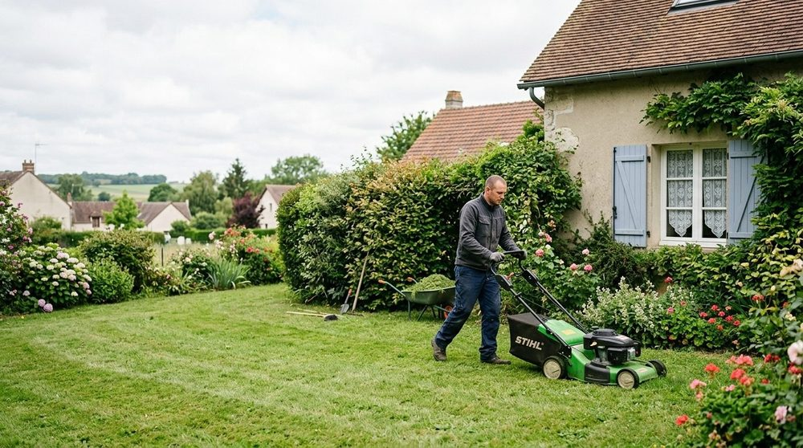
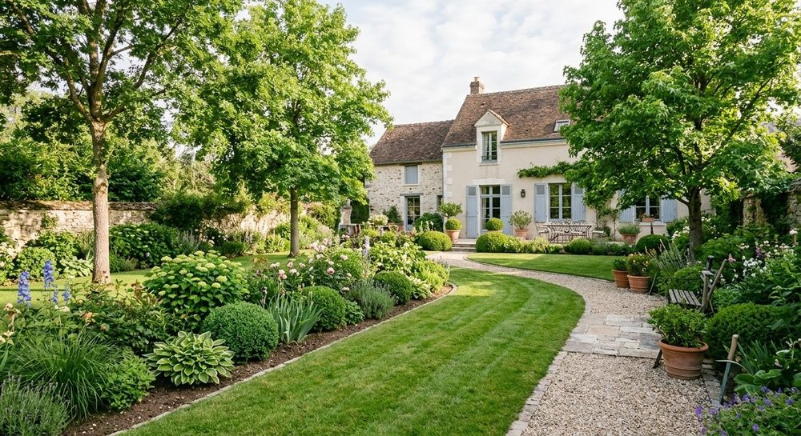

À propos
Le paysage, un métier de patience.
Aurea Paysages est une société d'aménagement paysager créée en 2009 et installée à Viroflay. Elle est dirigée par Thimothee Beigbeder.

Ce qui nous guide
Trois principes pour chaque chantier.
Un jardin sur mesure
Chaque terrain a son exposition, son sol et ses usages. Nous partons de vos besoins, pas d'un modèle.
Des matériaux durables
Pierre, bois, végétaux adaptés : des choix pensés pour bien vieillir.
Un suivi dans le temps
Un jardin évolue. Nous pouvons en assurer l'entretien au fil des saisons.
En bref
L'entreprise
- Nom
- Aurea Paysages (SARL)
- Création
- 2009
- Activité
- Services d'aménagement paysager
- Siège
- 14 rue Henri Malouet, 78220 Viroflay
- Dirigeant
- Thimothee Beigbeder
